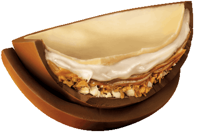

Pagina Inicial
Receitas
Cone Trunfado

Ingredientes
- 1 colher (sopa) de manteiga
- 1 lata de leite condensado
- 6 colheres (sopa) de achocolatado em pó
- 1 caixa de creme de leite
- 200 g de chocolate fracionado
- casquinha para sorvete
- confeitos coloridos
Modo de Preparo
- Em uma panela, adicione a manteiga, o leite condensado, o achocolatado em pó e o creme de leite.
- Misture até ponto de brigadeiro mole.
- Espere esfriar.
- Pique o chocolate fracionado e derreta no micro-ondas ou em banho-maria.
- Pegue a casquinha de sorvete e despeje o chocolate derretido dentro.
- Passe duas camadas dentro da casquinha e na borda.
- Coloque o brigadeiro dentro da casquinha e cubra com o restante do chocolate fracionado.
- Decore com confeitos coloridos.
Ovo de Colher

Ingredientes
- 2- Colheres (sopa) de manteiga
- 2- Latas de leite condensado
- 4- Colheres (sopa) chocolate em pó
- 2- Doses de rum
- 1- Caixinha de creme de leite
- 200g- por ovo de chocolate hidrogenado
- Ferrero Rocher
- Pedaços de nozes
- Formas para ovo de Páscoa
Modo de Preparo
- Em uma panela, derreta a manteiga e em seguida adicione o leite condensado, o chocolate em pó e mexa até formar um creme homogêneo.
- Adicione o rum e o creme de leite, mexendo sempre até dar ponto de brigadeiro.
- Pique o chocolate hidrogenado e derreta em banho-maria.
- Com o auxílio de uma concha, encha as formas para ovo de Páscoa até o nível indicado.
- Bata levemente o fundo da forma em uma superfície para eliminar bolhas de ar.
- Encaixe o topo da forma e pressione até o chocolate preencher toda a forma.
- Leve a forma à geladeira até que ela esteja fosca.
- Desenforme o meio-ovo e recheie-o com o brigadeiro reservado.
- Cubra o brigadeiro com bombons Ferrero Rocher e finalize com pedaços de nozes.